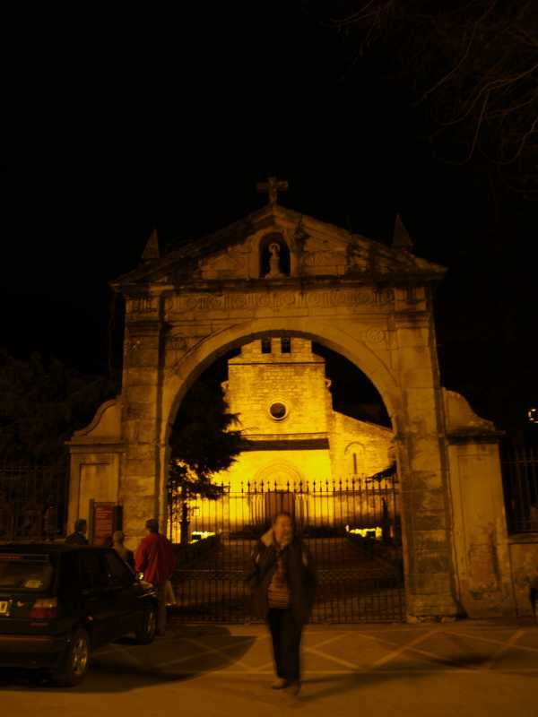

Encuentro en SantoñaMomentos antes dejó de llover y así pudimos contemplar la fachada de la iglesia en todo su esplendor. En esta parroquia de Ntra. Sra. del Puerto, oímos los veteranos las primeras misas, pues todavía estaba sin acabar la zona de la capilla en el Patronato. |
|
 |